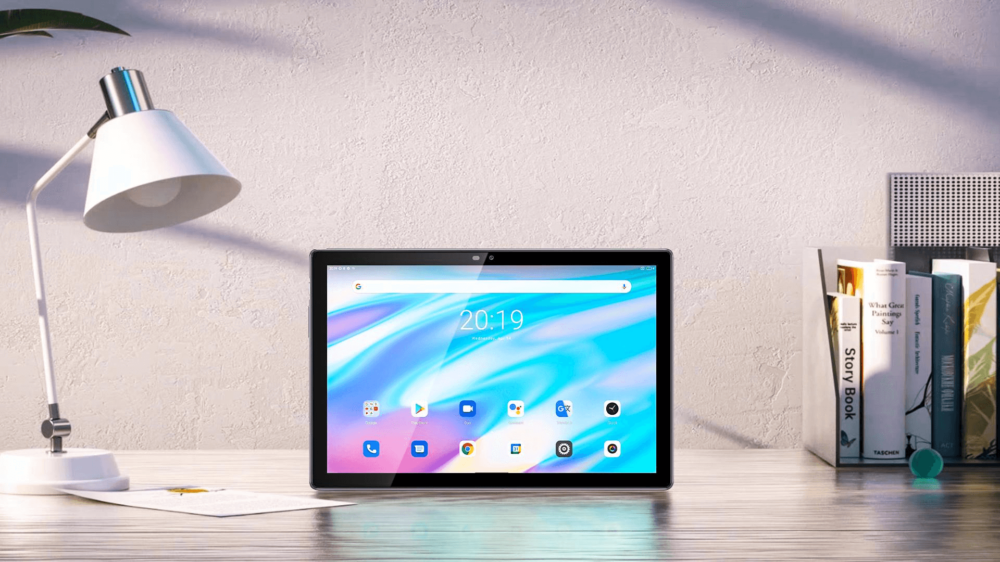
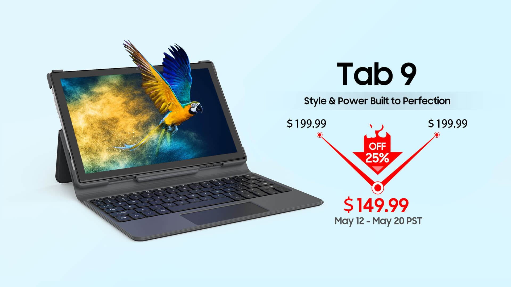

May 17,2021
OSCAL Tab 9 hits the market with 7480mAh battery and Doke OS_P 1.0 at $149.99 ($50 off)
OSCAL is now looking to push the boundaries of affordable smart devices.Its new budget tablet Tab 9 has been hitting the market since early May.
Tablet market has shown growth in recent years. According to UNESCO，as of May 2021, schools in 26 countries were closed country-wide, and schools were only partially open in 55 countries.To some extent, this leads to increasing demands for tablets.
Tab 9 comes to meet these demands with an affordable price. It is just $149.99 from May 12th to May 20th PST, $50 off the usual $199.99 price tag.
So what about the Tab 9? Is it an ideal choice ? Here are some of its main features.
7480mAh battery & 8.8 slim body
With a 7480mAh high-capacity battery, Tab 9 aims to deliver a long-lasting experience. According to the experimental data, Tab 9 easily supports 6 hours of video, 38 hours of music and 840 hours of standby time.
Furthermore, Tab 9 features an 8.8mm slim body, which combines stylish appearance with comfort for hands.
10.1"screen & keyboard attachment support
Tab 9, to bring more clarity, features a 10.1 inch FHD+display. Its 1920*1200 resolution supports high color saturation and shows clearer details. It is pleasing to the eye and helpful for those who are always on the go and need a large screen to learn and share information with others.
Furthermore, with the narrow bezel bringing more screen space, Tab 9 allows you to put more focus on what you are watching. And you can transform your Tab 9 into a PC-like experience by connecting the keyboard.
Spreadtrum T610 octa-core processor & 64GB ROM
Tab 9 is powered by Spreadtrum T610 octa-core chipset, which is responsive to take on whatever tasks thrown its way, be it the running of light music apps or demanding game apps. Besides, 64GB of ROM and 128GB expandable storage allows for storing movies and photos without worrying about being limited by storage space.
Self-developed Doke OS_P 1.0
To be pleasing to the eye and convenient to use, Tab 9 runs the self-developed Doke_P 1.0 OS.
Thanks to this new operating system, you can get a clean and clear interface resulting from exquisite app icons and gaussian blur.
Besides, the system manager, an all-in-one solution, allows for smarter control over trash cleaning, battery performance, gaming boosting, and how apps run in the background.
Doke_P 1.0 OS also supports customized color & temperature，which opens up more ways for you to personalize your device.
Dual 4G SIM
4G LTE connectivity lets you browse your favorite websites and streaming platforms smoothly. Moreover, for students who don't have a reliable Wi-Fi network at home, taking classes online can be a heavy challenge. In such a situation, Tab 9 is very helpful.
If you have been holding off on buying a tablet, hoping for a more affordable price, do not miss this discount. It is available at the official store, Amazon.De, AliExpress, Cdiscount and eBay. At Amazon.De，when you reach the payment section, please enter the promotional code W4N5OUQO, which is valid from 11:00 am 18th May to 31st May (local time).
OSCAL is a new brand from Blackview. According to the information released, Blakeview has entered the top ten in the mobile phone market in more than 10 countries and regions since its establishment in 2013.
OSCAL is committed to letting everyone enjoy smart devices with leap-forward performance and trendsetting design at a very friendly price. OSCAL product lines cover mainstream smartphones, rugged outdoor phones, tablets and earphones. Based on Blackview's technical strength, OSCAL is expected to deliver more competitive products in the future.